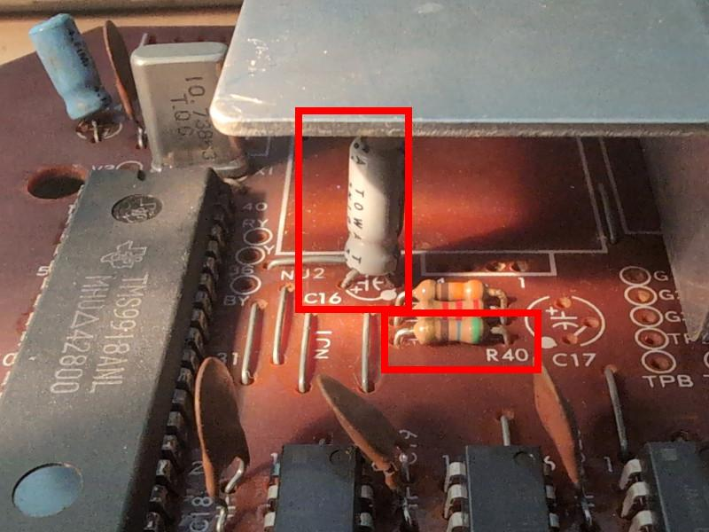
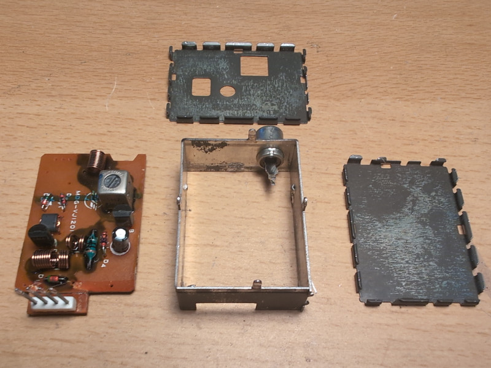
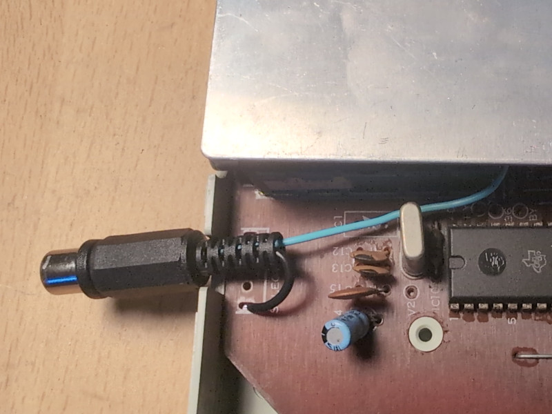

Sega SG-1000 II Composite Video Modification
I have a Sega SG-1000 II that I have modified to work with composite video and audio. Originally it only supports RF output and only on Japanese channels, which makes it impractical and hard to use. My changes are based on the 171-5141 revision of the PCB, which is supposedly the first revision, with the TMS9918 video chip. According to the datasheet for the TMS9918, it can drive a composite video monitor directly without needing any buffer, just use a 470 ohm pull down resistor on the signal. Likewise the SN76489 sound chip can be hooked up directly.
The R40 resistor and the C16 capacitor should be removed:

The R40 resistor is the pulldown for the video signal and originally 560 ohms, replace this with a 470 ohm resistor to match the datasheet. The video signal can then be taken directly from where the positive lead of the C16 capacitor was placed. It is possible to re-use the RCA connector on the RF modulator case for the video output, but the insides must be removed of course. Then just take a wire to the center of the RCA connector from where the positive lead of C16 was located. The video signal ground will be provided by the case itself as long as this is resoldered in place.

Take the audio signal from pin 4 of where the RF modulator was connected. Instead of making a new hole on the back of the SG-1000 case, the "Low-Hi" RF switch can be removed since it is no longer used. The audio signal can go to a cabled RCA connector sticking out from the hole where the switch used to be. Audio ground can also conveniently be taken from one of the ground connections used by that switch.
